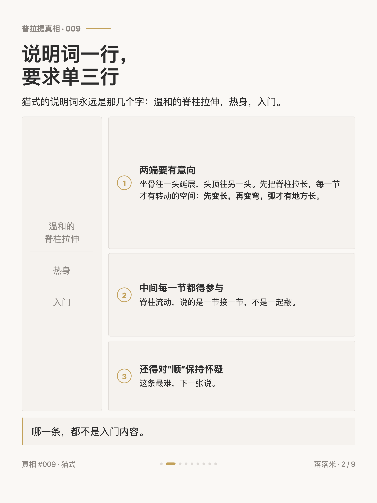
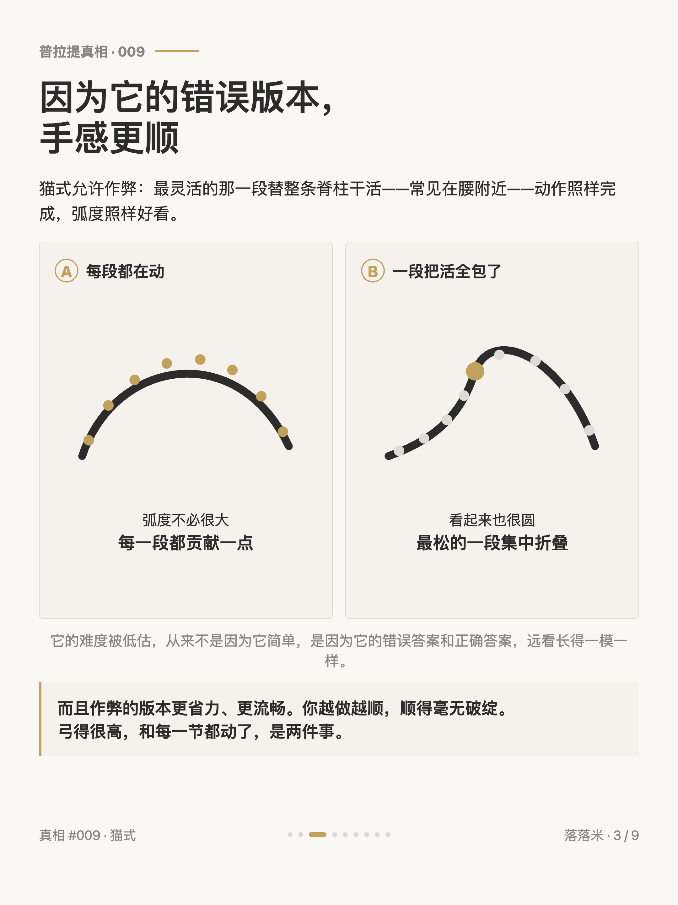
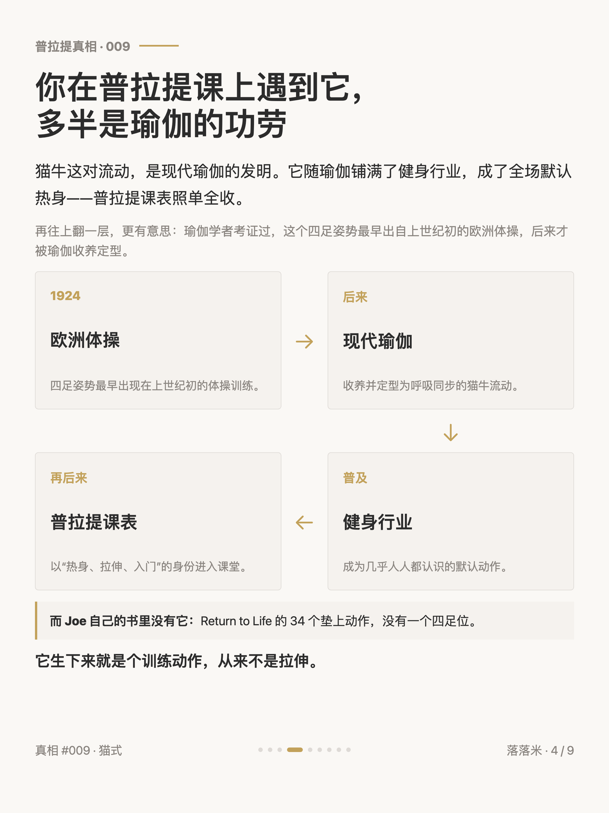
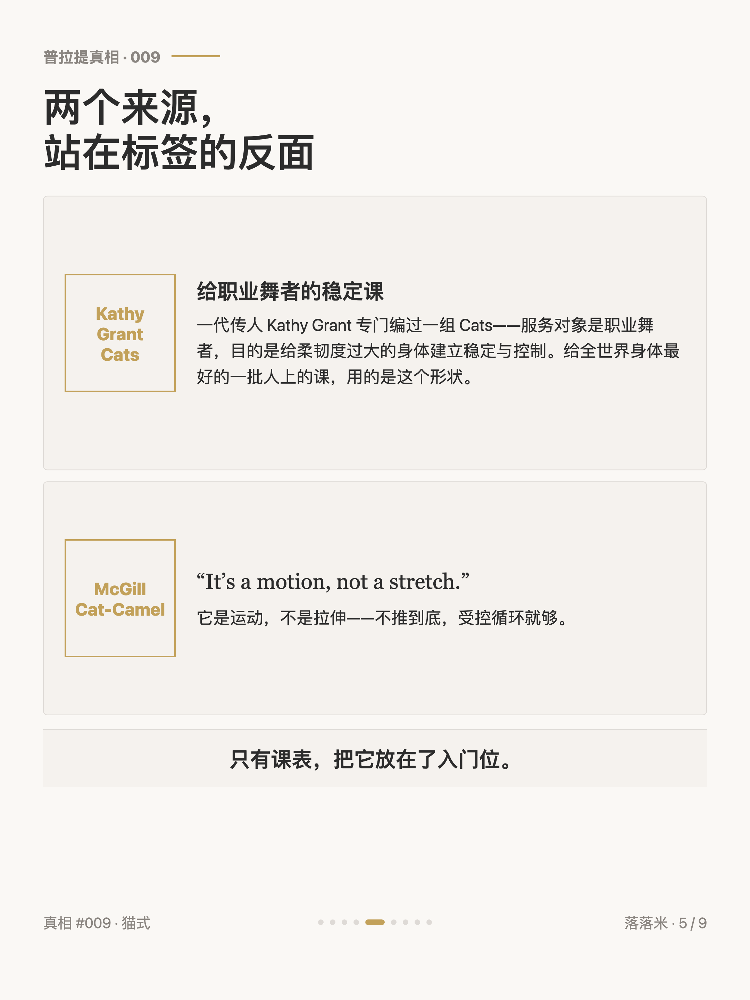
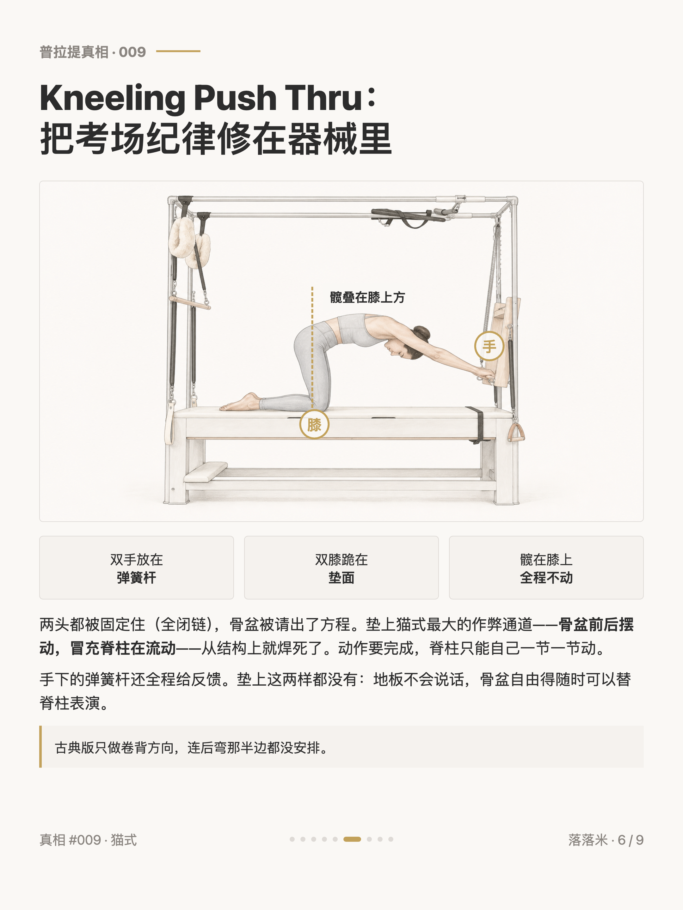
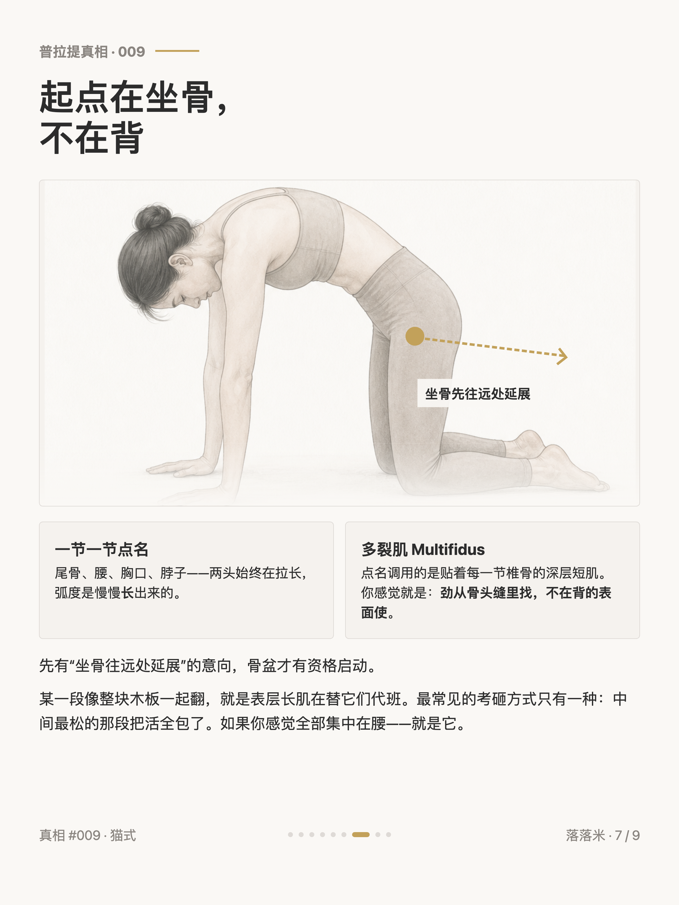
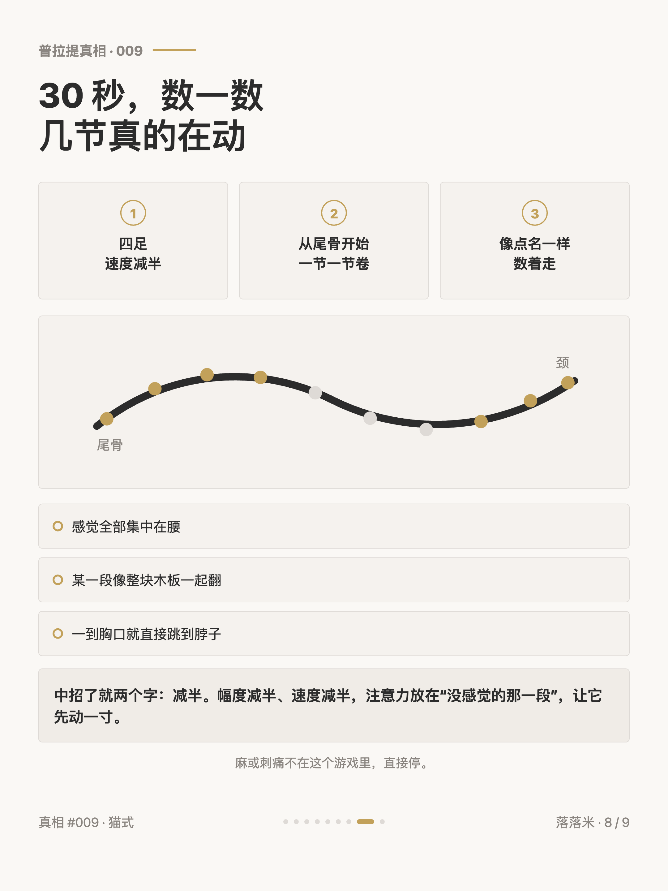
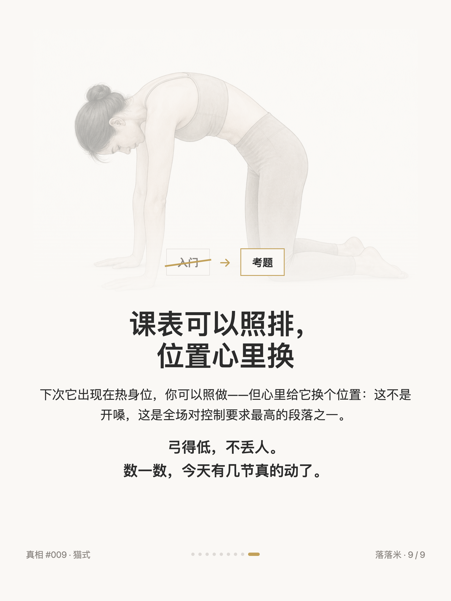

最被小看的动作，是猫式

1 / 9

2 / 9

3 / 9

4 / 9

5 / 9

6 / 9

7 / 9

8 / 9

9 / 9
← 左右滑动浏览全部卡片 →
先交代：我入门的时候，也把猫式当成热身里最不用想的那个。学深了才发现它可能是垫上最难的动作之一——要坐骨延展的意向，要整条脊柱一节一节的流动，哪一样都不是「温和拉伸」四个字装得下的。它的难度被低估，不是因为它简单，是因为它允许作弊，而且作弊的版本手感更顺：最灵活的那段替整条脊柱干活，动作照样完成，弧度照样好看。弓得很高，和每一节都动了，是两件事。
顺带翻了翻它的户口本：你在普拉提课上遇到它，多半是瑜伽的功劳——猫牛这对流动是现代瑜伽的发明，随瑜伽铺满健身行业，普拉提课表照单全收；Joe 的 34 个垫上动作里并没有它。再往上翻，瑜伽学者考证它最早出自上世纪初的欧洲体操——它生下来就是个训练动作，从来不是拉伸。一代传人 Kathy Grant 给职业舞者编的那组 Cats，目的恰好是稳定与控制；脊柱康复界的 Stuart McGill 干脆说 "it's a motion, not a stretch"。行内从没把它当入门，只有课表把它放在了入门位。
古典器械上甚至有它的护栏版：凯迪拉克上的 Kneeling Push Thru——双手在弹簧杆、膝盖在垫面，两头全被固定，髋钉在膝盖正上方全程不动。骨盆被请出方程，「骨盆摆动冒充脊柱流动」这条最大的作弊通道从结构上焊死，脊柱只能自己一节一节动。卡片里有个 30 秒的点名自测——慢一半，从尾骨开始数着卷，看看今天有几节真的在动。弓得低不丢人，那是你第一次让该动的段自己干活。